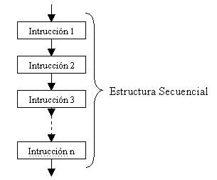
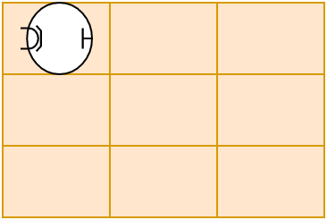

Un programa podría definirse como un conjunto de instrucciones que se utiliza para realizar una tarea específica en una computadora.
El programa puede ser diseñado para realizar una gran variedad de tareas, desde simples operaciones matemáticas hasta complejas operaciones de procesamientos de datos, gestión de bases de datos, video juegos y mucho mas.
Los programas de computadora se crean mediante la utilización de un lenguaje de programación.
Una computadora es una máquina electrónica que puede recibir, almacenar, procesar y producir información.
El CPU (unidad central de procesamiento, central processing unit por sus siglas en inglés) es el componente principal de una computadora que realiza la mayoría de las operaciones y cálculos. Es el cerebro de la computadora y se encarga de interpretar y ejecutar las instrucciones del software.
La RAM (Random Access Memory) es una forma de memoria volátil que se utiliza en las computadoras para almacenar temporalmente datos e instrucciones mientras se ejecutan los programas.
La cantidad de RAM que tiene puede afectar su rendimiento general del equipo. Cuanta más RAM tenga un equipo, más programas podrá ejecutar a la vez sin ralentizar la máquina.
NO confundir con memoria.
Es un tipo de memoria no volatil. Los datos pueden permanecer en el tiempo, incluso cuando la computadora se apague.
Discos rígidos, discos ssd, pendrives, etc.
Un algoritmo es un conjunto de instrucciones precisas y bien definidas que se utilizan para resolver un problema o realizar una tarea.
Un algoritmo puede ser expresado en una variedad de formas, incluyendo en lenguaje natural, diagramas de flujo, pseudocódigo y lenguajes de programación.
Dijimos que un algoritmo es un conjunto de instrucciones...
Supongamos que tenemos que desarrollar el algoritmo para que un robot aspiradora limpie.
El conjunto de instrucciones puede estar dado por las cosas que el robot podría hacer. Como limpiar, moverse, girar, etc.
Un algoritmo es en parte una secuencia de instrucciones
La secuencia indica que se procesa una instrucción tras otra. En orden de arriba hacia abajo.
El siguiente podría ser el programa que hace que la aspiradora robot mencionada funcione:
El orden de las instrucciones está dado de arriba hacia abajo. Primero se procesa la línea 1, luego la 2 y termina en la línea 8.
Un programa hace funcionar un semáforo:
*Se asume que solo una luz puede estar encendida al mismo tiempo.
Algoritmo: Robot que limpia
limpiar
avanzar
limpiar
avanzar
limpiar
...
Algoritmo: Robot que limpia
limpiar
avanzar
limpiar
avanzar
limpiar
...
Algoritmo: Robot que limpia
limpiar
avanzar
limpiar
avanzar
limpiar
...
Algoritmo: Robot que limpia
limpiar
avanzar
limpiar
avanzar
limpiar
...
Algoritmo: Robot que limpia
limpiar
avanzar
limpiar
avanzar
limpiar
...
Algoritmo: Robot que limpia
limpiar
avanzar
limpiar
avanzar
limpiar
...
Más área para limpiar con la aspiradora.
limpiaravanzargirar a derecha¿Cómo se les ocurre que puede ser?
Una condición es algo que puede ser evaluado y tiene como respuesta o resultado un verdadero o falso.
Por ejemplo, una condición lógica sería si alguien preguntara ¿Trabajás acá?. La respuesta sería sí o no (verdadero o falso).
Otro ejemplo, ¿10 es mayor a 9? en este caso sería verdadero.
Veremos muchas condiciones lógicas a lo largo del curso.
Las estructuras de control son construcciones en la programación que permiten controlar el flujo de ejecución de un programa.
Existen tres tipos principales de estructuras de control: las estructuras de selección, de iteración, repetición y las estructuras de salto.
En el ejemplo de la aspiradora vimos que las instrucciones repetían una y otra vez. Para simplificar el algoritmo, existen instrucciones que nos permiten escribirlas solo una vez y el algoritmo se encargará de repetirlas.
repetir (3 veces)
limpiar
avanzar
Observar que las instrucciones limpiar y avanzar están "tabuladas". Eso significa que esas instrucciones están dentro del bloque de instrucciones repetir.
Las instrucciones, limpiar y avanzar están en un bucle o loop.
Se dice un bloque de instrucciones al conjunto de instrucciones que se incluyen dentro de otra instrucción.
instruccion_a
instruccion_b
repetir(3 veces)
instruccion_c
instruccion_d
instruccion_e
La secuencia es: 1-2-3-(4-5 4-5 4-5)-6
Las instrucciones c y d están dentro del bloque de repetir(3 veces)
Algoritmo "por si llueve" v1
mirar por la ventana
si (llueve)
agarrar paraguas
ir al curso
El flujo del algoritmo, en caso que llueva será, la línea 1,2,3 y 4. Pero si no llueve, será 1,2 y 4.
Observar que (llueve) tiene como resultado un valor sí o no... verdadero o falso respectivamente.
Se utilizan los paréntesis para destacar la instrucción si y a la condición llueve.
Algoritmo "por si llueve" v2
mirar por la ventana
si (llueve)
agarrar paraguas y llaves del auto
sino
agarrar la sube
ir al curso
El flujo del algoritmo, en caso que llueva será, la línea 1,2,3 y 6. Pero si no llueve, será 1,2,4,5 y 6.
Algoritmo "llenar pileta con agua"
abrir canilla
mientras (la pileta no esté llena)
echar agua
cerrar canilla
El flujo será: línea 1 y luego las líneas 2 y 3 se repitirán indefinidamente hasta que se llene la pileta. Luego continúa con las próximas sentencias.
Observar que (la pileta no esté llena) tiene como resultado un valor verdadero o falso.
Algoritmo "Saludamos a lxs alumnxs"
abrir centro de formacion
mientras (es horario de atencion)
si (llega una persona)
si (viene al curso de programacion)
saludar "Bienvenidx al curso de programacion"
sino
saludar "Bienvenidx"
sino
espero
cerrar centro de formacion
En este ejemplo se muestra que es posible anidar estructuras de control. En este caso se anidaron una iteración y dos selecciones pero no hay límites.
Las condiciones que están dentro del mientras y de los si pueden ser verdadero o falso.
Anteriormente se utilizaba una instrucción especial llamada goto pero ya no es recomentable. Más adelante veremos en el curso como usar eficientemente una alternativa a esta estructura de control utilizando funciones.
En los algoritmos, es de suma importancia poder ingresar, generar y almacenar datos.
Por ejemplo si quisiéramos llevar la cuenta de las veces que un algoritmo realiza una cierta acción necesitamos de un mecanismo que nos permita almacenar ese dato, consultarlo y manipularlo.
Supongamos que queremos contabilizar la cantidad de personas que entran al centro de formación.
abrir centro de formacion
cantidad = 0 # Arranco a contar desde 0
mientras (sea el horario)
si (llega una persona)
cantidad = cantidad +1
sino
espero
cerrar centro de formacion
Informar ("Entraron {cantidad} personas")
En este caso, el dato está representado por cantidad. Donde se van contabilizando las personas cuando van llegando.
verdadero o falso.Con las herramientas vistas hasta ahora volcadas en un lenguaje de programación se pueden desarrollar una gran cantidad de programas.
Escribir un algoritmo que permita a la aspiradora barrer todo el piso. Utilice todas las herramientas aprendidas que considere útiles.
El área a limpiar es la que se muestra en la imágen.
Diseñe un algoritmo para "adivinar un número".
Una persona piensa un número y le pide a las demás personas que le digan un número. Si la persona no acierta, le preguntará a la persona siguiente. El algoritmo se ejecuta hasta que alguien adivine el número*. Una vez que lo adivine, le dirá a la persona ¡Ganaste!. Se debe llevar la cantidad de intentos hasta que se adivina el número.
Precond: Eventualmente alguien adivinará el número.
Poscond: Se obtiene el número de intentos hasta que alguien acierta.